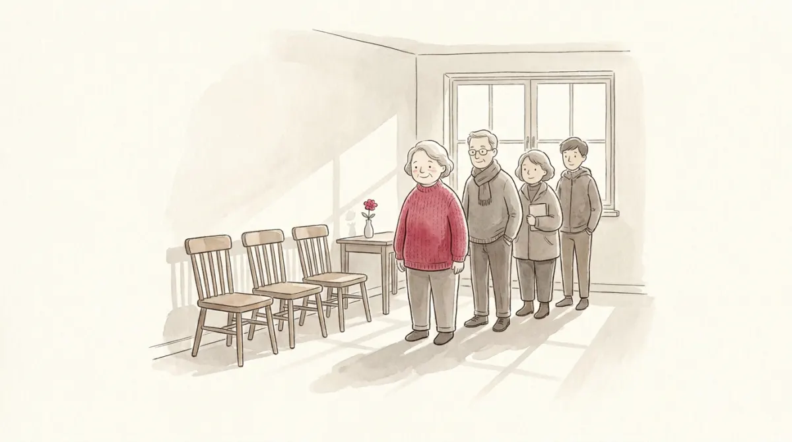
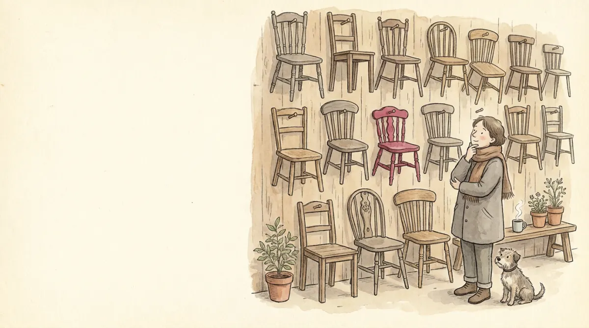

Marta hands in her notice in March. Her design studio was fine; she just wants work she likes better, and it takes her eleven weeks to find it. For those eleven weeks she is officially unemployed, and here is the point: nothing went wrong. An economy where nobody was ever between jobs would be an economy where nobody ever moved, closed, opened, or improved anything.
So every economy carries a baseline level of unemployment even in good times. The course calls it the natural rate of unemployment: the average rate around which the economy fluctuates. Recessions push the actual rate above it, booms pull it below, and this chapter asks what sets the baseline itself. (What pushes the actual rate around in the short run is the second half of the course.) In the Italian data on the slides, that baseline hovers stubbornly around 8 to 10 percent across four decades: the natural rate is not small, and it is not the same everywhere.
Two forces keep it above zero, and they structure the whole chapter: wages that cannot fall (structural unemployment) and search that takes time (frictional unemployment, Marta's kind).
Before the two forces, the accounting machine that turns them into a number. Picture the pool of unemployed people as water in a bathtub. Every month the faucet adds water: some share s of employed workers separate from their jobs (layoffs, closures, quits like Marta's). Every month the drain removes water: some share f of unemployed workers find jobs. That is the entire model.
The water level stops moving when inflow equals outflow: s·E = f·U (E employed, U unemployed). Divide through and the steady-state unemployment rate pops out:
u* = ss + f
Read it like a bathtub owner. A leakier labor market (higher s, faucet open wider) means a higher water level. A faster drain (higher f, people find jobs quickly) means a lower one. Everything policy does to unemployment in this chapter works through one of those two dials.
The slides dress the bathtub up with two more dials: μ (mu), the efficiency of matching (how well job seekers and vacancies find each other; employment agencies raise it, generous unemployment insurance lowers it by making search less urgent), and J, the number of jobs firms want to fill. Raising μ or J drains faster: u* falls. Raising s fills faster: u* rises. The one sneaky case: firing costs. They close the faucet a little (fewer layoffs, s↓) but also clog the drain (firms hire more cautiously, μ↓), so the net effect on u* is genuinely ambiguous, and the exam knows it.
The drain clogs badly when the price of labor cannot fall. If the real wage is stuck above the level where labor supply meets labor demand, firms want fewer workers than the number of people willing to work: there are simply not enough chairs, and someone must stand no matter how well everyone searches. That standing crowd is structural unemployment, and the queue is visible in the picture below. Drag the wage floor:
The mock gives exactly this market (labor demand 200 − L, supply fixed at 100) and a minimum wage of 90. Panic answer: "10 unemployed". Correct answer: the market-clearing wage is 200 − 100 = 100, which is above 90. A floor below the ceiling touches nothing. Zero unemployed. Always compute the equilibrium wage first and check whether the floor actually binds.
Three reasons real wages get stuck above equilibrium:

Now suppose wages are perfectly flexible and there are enough chairs for everyone. Unemployment still is not zero, because the chairs are all different. Workers differ in skills and tastes, jobs differ in requirements and location, and information about who wants whom travels slowly. Matching Marta to the studio that actually suits her takes time, and that time is frictional unemployment.

It gets a steady refill from sectoral shifts: demand forever migrates between industries and regions (typewriter repair out, computer repair in; agriculture from 58% of the US workforce in 1850 to 2% now), and every migration strands workers who must search anew. A dynamic economy cannot avoid this kind; it can only make the search faster or slower:
Structural (not enough chairs at the stuck wage) or frictional (finding the right chair takes time)? The exam expects the reflex.
| Steady-state unemployment | u* = s / (s + f) |
| Faucet s ↑ (sectoral shifts) | u* rises |
| Drain f or μ ↑ (agencies, training) | u* falls |
| Generous UI | μ↓, search slows, u* rises (but matches improve) |
| Firing costs | s↓ and μ↓ together: effect on u* ambiguous |
| Wage floor questions | compute the clearing wage FIRST; a floor below it binds nothing |
| Structural causes | minimum wages, unions, efficiency wages (Ford's $5 day) |
| Frictional causes | search time, sectoral shifts, imperfect information |
One fraction and a bathtub. The rest is stories about faucets and drains.
Six questions, real mock-exam style: +1 right, −⅓ wrong, 0 skip.